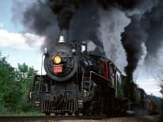
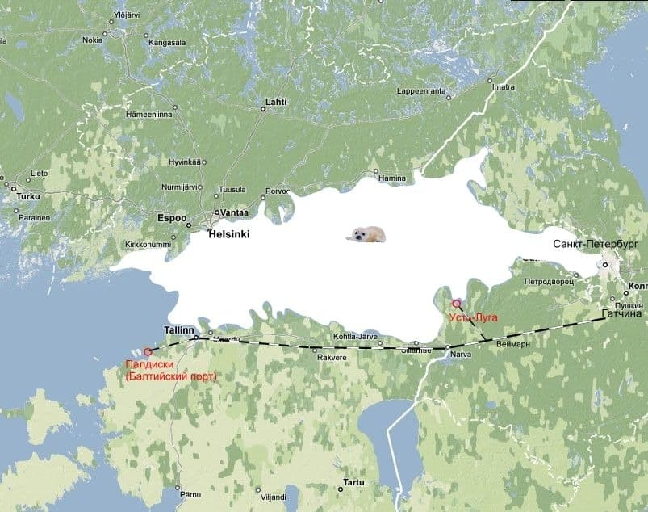
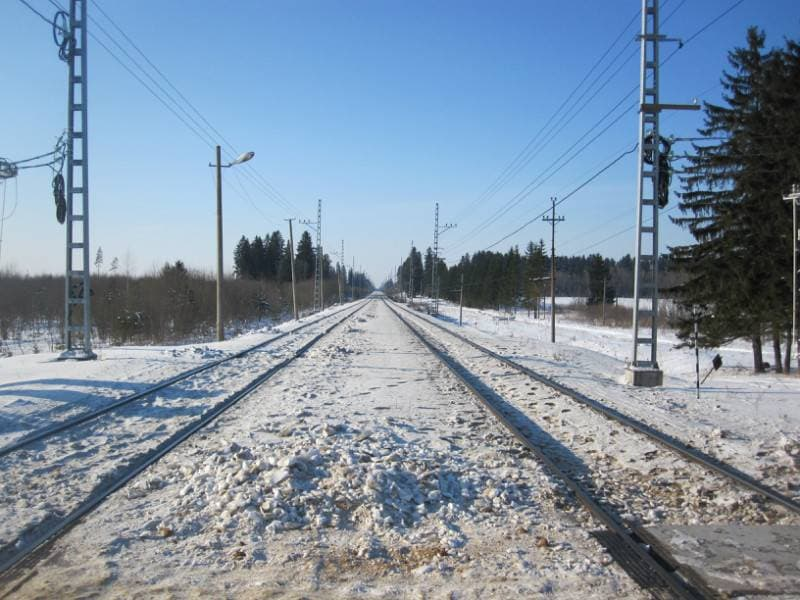

Санкт-Петербург - порт замерзающий, потому мореплавание в зимний период было и есть задачей трудной. Финский залив замерзает с конца ноября до середины марта, начиная с вершины (восточная часть) к горлу (западная часть). Сплошной лед для судов следующих в город, как правило, начинается от траверза Таллина. Плотность льда нарастает в направлении Невской губы, соответственно. Ледовая проводка затратна и связана с рисками. Естественно желание иметь если не полностью свободный ото льда порт, то располагающийся в месте, сокращающем ледовую проводку.
Потому, в последнее время, в крайне юго-западной российской части залива, стремительно строится порт Усть-Луга. Кроме того, наличие такого порта разгружает город от транзитного грузопотока.
Но любопытна и не совсем понятна история проблемы, очевидной с начала строительства города.
Через 15 лет после основания Санкт-Петербурга, Петр I на месте небольшого шведского поселения с крепостью Rågervik закладывает город-порт с защитным молом, купеческой гаванью и адмиралтейской верфью названный Рогервик (1715 год).
В дальнейшем город будет называться Балтийский порт (с 1762 г), Балтиски (с 1922 г), Палдиски (с 1934г). Очевидно, что Петр имеет виды на новый порт как военную базу и торговую артерию. Мало, что незамерзающий, еще и самый близкий к Европе.
В 1870 году к Балтийскому порту была протянута частная - Балтийская железная дорога. Поскольку дорога частная, очевидны ее цели - получение прибыли. Из этого следует, что движение грузов через Балтийский порт было коммерчески выгодным, полсотни километров лишних путей от Таллина в 1870 году тянуть "сдуру" не стали бы. В 1893 году дорога выкупается у акционеров и принимается в казну.

>В 1914 году начинается мировая война. С 1922 по 1939 год Эстония - независимое государство. С 1941 по 1945 год вторая мировая война. Понятно, в этот период о развитии порта Палдиски и коммуникаций к нему речи не шло. В советский период канал грузоперевозок, как способ обхода ледовой пробки, не используется. В 1962 году в Палдиски открывается крупнейший в Советском союзе центр подготовки экипажей атомного подводного флота с двумя ядерными реакторами на территории. Город опоясывается колючей проволокой и сторожевыми вышками. Какие мотивы были организовывать такой центр на самых западных рубежах страны в непосредственной близости к вероятному противнику, да еще с ядерными реакторами в центре Балтийского моря, спросить не у кого. В 1994 году, с распадом Союза и восстановлением независимости Эстонии, последний российский корабль покидает Палдиски - забытые ворота Российской Балтики.
В 1993 году начинается строительство порта Усть-Луга в Лужской губе с соответствующей инфраструктурой. Главный аргумент - короткий, в сравнении с портом Санкт-Петербург, период ледовой проводки. Таким образом, имеющееся готовое, при советской власти было невостребованно и срочно потребовалось, пусть в урезанном виде, как только этой власти пришел конец. Но появилась другая, для которой главным стимулом являются деньги.

И еще. В районе есть замечательная традиция - здороваться. Друг другу желают здоровья совершенно незнакомые люди. Эта манера привита с младенчества. Как в Европе. Так и на железной дороге. Мчится огромный состав, за ним пурга вьется. Стоишь один на платформе, поднимаешь руку... и огнедышащий монстр взвизгивает веселым свистком.